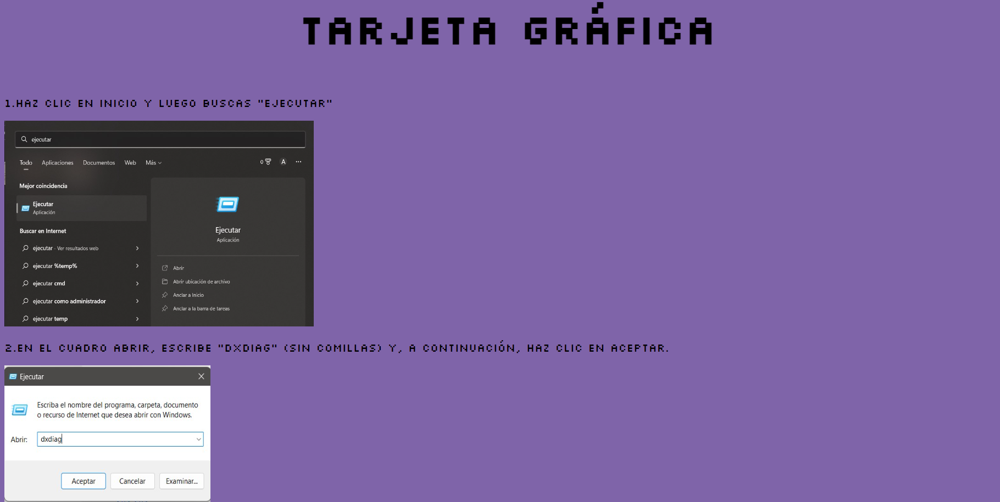
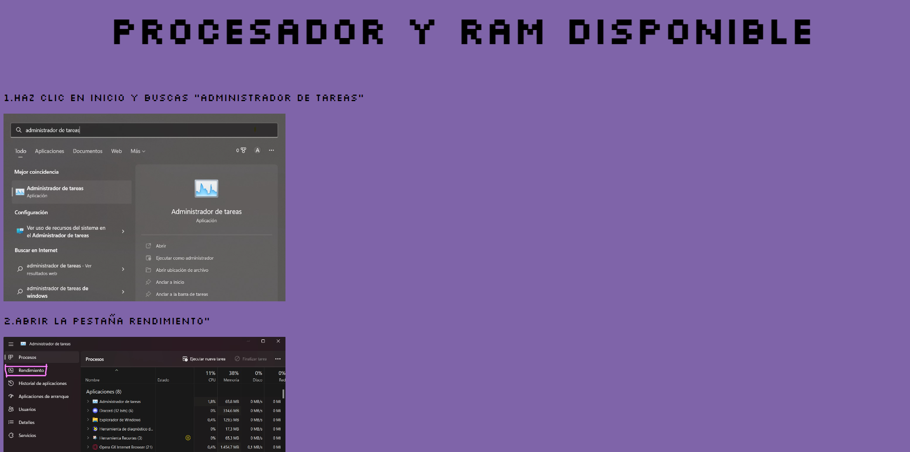
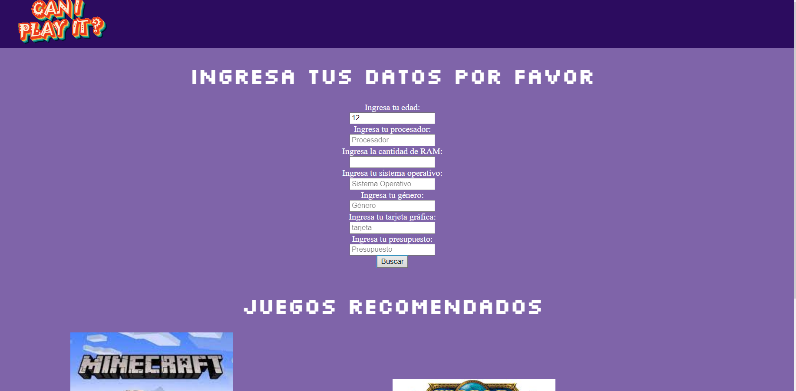
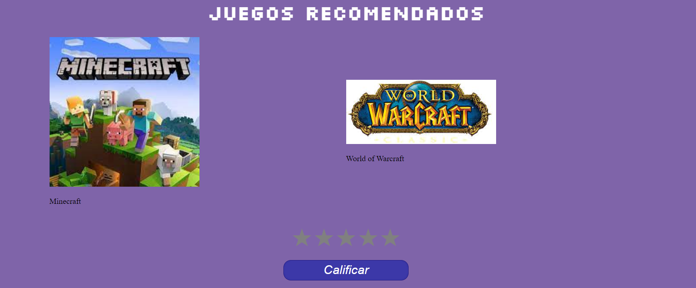

BIENVENIDO A "CAN I PLAY IT?"
Este es un tutorial de como ingresar a nuestra pagina y realizar la busqueda de los juegos que tu maquina podría correr
1. Nos encontramos con una pantalla que nos muestra diferentes opciones
2. Se ingresa dando click en el botón registrarse, aquí puedes crear tu usuario; registrandote puedes acceder a opciones como mandar reseñas y calificar la busqueda con estrellas
3. En este apartado se ingresa al dar click en boton ingreso de la página principal, aquí se entra a la página cuando ya tienes un usuario creado
4. Abajo de la página principal aparece una extensión llamada "tus componentes" al ingresar te encontraras con un tutorial que te permitira buscar los componentes de tu computador
 5. Al ingresar a la página sea como usuario "registrado" o "no registrado" podras acceder a un buscador en el cual deberas colocar todos los datos de tu computador y te apareceran las recomendaciones que tenemos para ti
6. Por ultimo tenemos para ti los titulos que podras jugar en tu computador, con sus descripciones y sus links de descarga; abajo encontraras unas estrellas que serviran para calificar la busqueda y seguir mejorandola para ti
